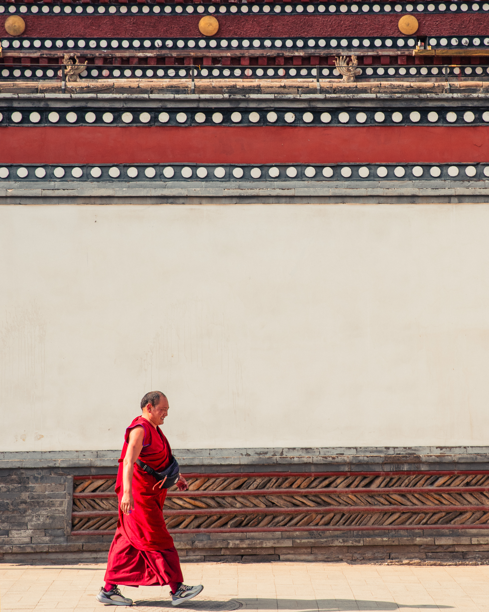

At the crossroads of Hui, Tibetan and Han Chinese cultures, Xining is one of the world's most compelling cultural melting pots

Capital of Qinghai province, on the Huang He River in northwestern China
2.5 million, comprising Hui Muslims, Tibetans, Mongols and Han Chinese
May to September for mild weather and clear mountain views
Direct flights from major cities or high-speed rail from Xi'an and Beijing
Walking through the Muslim Quarter of Xining, you enter a world defined by crescents, minarets and the call to prayer echoing across brick courtyards. The Hui Muslims have inhabited this region for centuries, creating a distinct culture that blends Islamic faith with Chinese pragmatism. Their mosques are not separated from city life—they pulse at its center.
The Dongguan Mosque, one of China's oldest, sits majestically in the heart of the city. Its architecture tells a story of cultural negotiation: traditional Chinese tile work and upturned eaves frame Islamic geometry and Arabic calligraphy. Just blocks away, the newer Nanguan Mosque serves the growing community with contemporary grace. Together, they represent continuity and change within a faith community that has weathered dynasties.
Food vendors fill the surrounding streets with the aroma of lamb skewers, hand-pulled noodles, and fried dough. The Hui community has made Xining a culinary crossroads where Islamic dietary traditions meet regional ingredients, creating something entirely unique.


An hour's drive from Xining, the Kumbum Monastery stands as one of Tibetan Buddhism's most sacred sites. Built in 1583 on the birthplace of Je Tsongkhapa, the monastery is a labyrinth of golden roofs, prayer wheels, and monks moving between ancient chambers. The scale is overwhelming—thousands of stupas, butter lamps reflecting in the darkness, pilgrims circumambulating with prayer beads in hand.
Within the city itself, Nanshan Temple offers a more intimate encounter with Tibetan spiritual practice. Perched on a hillside overlooking Xining, the temple complex draws both devout practitioners and curious travelers. The views from its terraces encompass the entire city—a literal and symbolic vantage point for understanding how Tibetan Buddhism coexists with other faiths and traditions in this remarkable place.
What strikes visitors most is the openness of these sacred spaces. Pilgrims, monks, tourists and photographers move through these sites with a kind of mutual respect that seems increasingly rare in the modern world. Here, devotion and curiosity are not opposed but intertwined.



The Qinghai Provincial Museum traces the region's complex history through its collections—artifacts from the ancient Silk Road, exhibits on minority cultures, and contemporary photography documenting rapid urban change. It's a place where Xining confronts its own transformation, literally surrounded by building cranes and construction noise.
Nanshan Park offers respite from the city's intensity. Here, locals exercise, practice tai chi, and simply breathe in the mountain air that defines the Qinghai plateau. Vendors sell roasted chestnuts and dried fruit. Children play while their grandparents watch. It's a scene repeated across urban China, yet in Xining it carries the weight of cultural complexity—different traditions sharing the same public space, finding common ground in the universal human need for fresh air and community.


Beyond Xining's urban boundaries lies the vast Qinghai plateau—one of Earth's most dramatic landscapes. Qinghai Lake, the country's largest saltwater lake, stretches endlessly under impossibly clear skies. In summer, the surrounding meadows erupt with wildflowers. In winter, the lake's surface turns to ice, and the few visitors who venture this far must confront the plateau's raw indifference to human comfort.
The Tibetan edge—regions where Han Chinese presence diminishes and traditional Tibetan culture reasserts itself—represents a geographical and cultural boundary. Here, prayer flags replace street signs, yaks graze where cars would go in the cities. It's a reminder that Xining, for all its cosmopolitan complexity, is ultimately an outpost of Chinese civilization, surrounded by vast territories where other worlds persist.


Explore the distinctive cuisine of Xining and Qinghai province—where Hui, Tibetan and Han traditions converge in remarkable dishes.
Use AllerGuide to track your personal allergen profile and discover which dishes are safe for you.
Served by major carriers with connections to Beijing, Shanghai, Chengdu and other hub cities. Modern terminal with English signage.
Direct service to Xi'an (3 hours) and Beijing (11 hours). The railway approach offers stunning views of the Qinghai landscape.
Extensive bus network connects the city. Taxis and ride-sharing apps work reliably. Hotels can arrange drivers for longer journeys.
Stay in the city center near People's Square for access to both Muslim Quarter and modern Xining, or on Nanshan for mountain proximity.